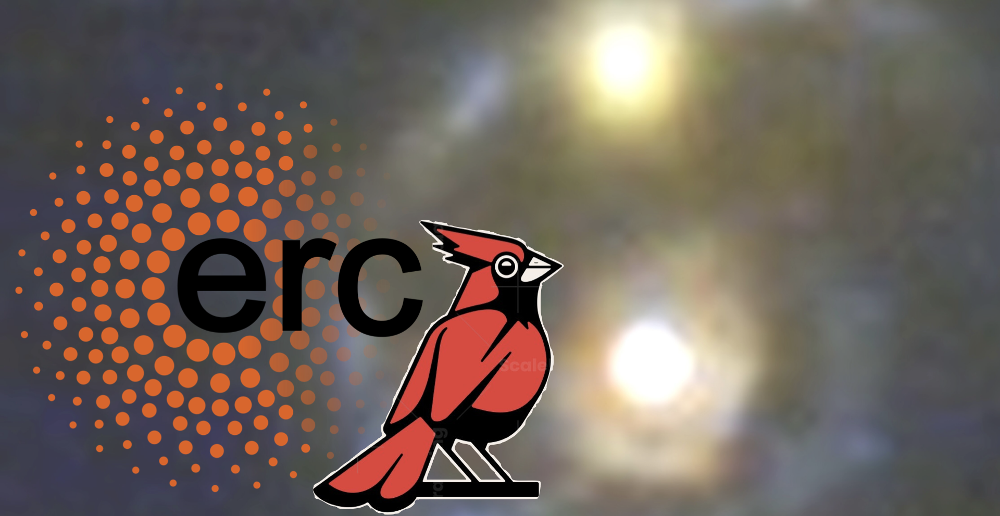
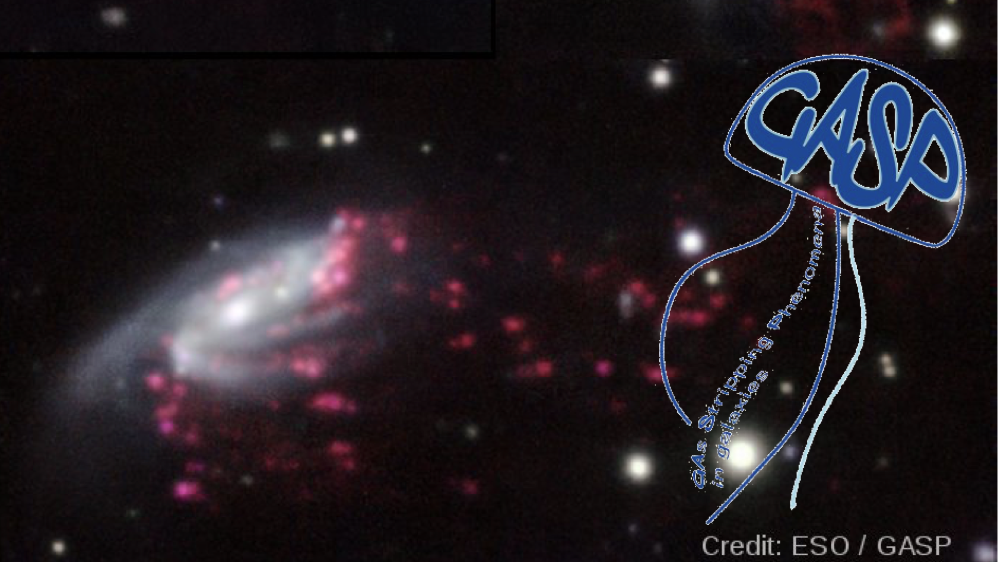

Amir H. Khoram
PhD Candidate
Department of Physics and Astronomy
Alma Mater Studiorum -- Università di Bologna.

My research interests span a broad range of topics in astrophysics, including dark energy, galaxy evolution, and star formation in the early universe. I also study the influence of environment on galaxy evolution at intermediate redshifts, as well as the chemical evolution of galaxies in the local Universe.




A list of recent and notable research outputs.
Feel free to reach out for collaborations, questions, or just to say hi.
amirhossein.khoram@unibo.it amirhossein.khoram@inaf.it
My research focuses on how galaxies form, grow, and quench within their gaseous and large-scale environments. I study environmental effects on galaxy evolution from intermediate redshift to the early Universe, using spatially resolved spectroscopy, JWST, HST, MUSE, MaNGA, and multi-wavelength data. My current work combines galaxy evolution and quenching with measurements of the surrounding cosmic web, with a particular interest in how gas supply and environment regulate galaxy growth. As a core member and coordinator of the JWS3 JWST survey, I am now extending this programme to the formation of galaxies at redshift 4--9.
Then add this new spotlight section directly after your Blue Jay section:JWS3 (JWST Single Shutter Survey) is an upcoming JWST Cycle 5 large programme designed to observe more than 600 galaxies at redshift z ∼ 4--9, extending deep spectroscopic studies of galaxy evolution into the early Universe. I am a core member and coordinator of the survey, working across the international collaboration to help coordinate the analysis and scientific exploitation of this large spectroscopic sample.
JWS3 will provide deep NIRSpec spectroscopy that can trace the stellar populations, ionised gas, star-formation histories, and physical conditions of galaxies during an epoch when the first massive galaxies and large-scale structures were rapidly assembling. A central goal of my work is to use this sample to investigate when environment begins to influence galaxy formation and quenching, and to connect the early assembly of galaxies with the environments in which they later evolve.

I’m a PhD candidate in Astronomy at the University of Bologna, where I work on galaxy formation and evolution across cosmic time. Before this, I earned my MSc in Astrophysics and Cosmology from the University of Padova and my BSc in Physics from Kharazmi University of Tehran.
My research focuses on the connection between galaxies, their gas supply, and their large-scale environments, with particular interest in galaxy quenching and the emergence of structure in the early Universe. I work with MUSE, JWST, HST, MaNGA, Keck/MOSFIRE, and multi-wavelength data, and I am a core member and coordinator of the JWS3 JWST survey, which will observe more than 600 galaxies at z ∼ 4–9.
My fascination with astronomy began when I was an amateur observer at thirteen. Since then, I have spent countless nights under dark skies observing and doing astrophotography, often travelling in search of places far from artificial light. That same curiosity still shapes how I approach professional astronomy.
Outside research, I enjoy astrophotography, poetry, gravel biking, climbing, wilderness travel, and exploring new cuisines.
My research asks how galaxies form, grow, and quench within their gaseous and large-scale environments. I study environmental effects on galaxy evolution from intermediate redshift to the early Universe, combining spatially resolved spectroscopy, JWST, HST, MUSE, MaNGA, and multi-wavelength observations.
My work has progressed from tracing how environmental gas processing changes chemical evolution, through interaction-driven transformation and quenching at cosmic noon, to measuring the gaseous cosmic web around galaxies. I am now extending this programme toward the formation of galaxies at z ∼ 4–9 through JWS3.
Massive galaxies are among the first to build substantial stellar populations and, at surprisingly early times, some also become quiescent. In the Red Cardinal project, we use the James Webb Space Telescope together with other space- and ground-based facilities to investigate the stars, gas, dust, and supermassive black holes in distant galaxies. The goal is to understand the physical processes that drive rapid galaxy growth, feedback, and quenching at cosmic noon.
GASP (GAs Stripping Phenomena in galaxies with MUSE) is an ESO Large Programme using the MUSE integral-field spectrograph on the VLT to study galaxies undergoing gas removal across environments from the field to clusters.
My work within GASP uses spatially resolved spectroscopy to trace how environmental gas stripping changes the chemical evolution of galaxies. By comparing stripped systems with non-stripped cluster members and coeval field controls, I investigate how processes such as ram-pressure stripping alter the gas supply, star formation, and enrichment of galaxies.
This work established the environmental side of the research programme that I now carry to higher redshift: understanding galaxy evolution by directly measuring the gas being exchanged between galaxies and their surroundings.
The Blue Jay survey is a Cycle 1 James Webb Space Telescope programme (GO 1810; PI Sirio Belli) using NIRSpec to obtain deep spectroscopy of roughly 150 galaxies at 1.7 < z < 3.5. The programme combines spectroscopy with parallel NIRCam imaging to study the stellar populations, ionised gas, morphology, and evolution of galaxies at cosmic noon.
My work on Blue Jay includes the multi-band photometric analysis needed to connect the spectroscopy to galaxy structure and stellar populations. I use joint photometric and spectroscopic modelling with Prospector and non-parametric star-formation histories to reconstruct the formation and quenching histories of massive galaxies.
Blue Jay is the observational foundation for my current work on the relationship between galaxy quenching and the surrounding cosmic environment.
JWS3 (JWST Single Shutter Survey) is an upcoming JWST Cycle 5 large programme designed to obtain deep NIRSpec spectroscopy for more than 600 galaxies at z ∼ 4–9, pushing systematic spectroscopic studies of galaxy evolution into the early Universe.
I am a core member and coordinator of JWS3 (PI: Sirio Belli), helping coordinate the international collaboration and the scientific exploitation of this large spectroscopic sample. The survey will provide a powerful observational bridge between the galaxies we study at cosmic noon and the much earlier epoch when massive galaxies and their environments were still assembling.
A central goal of my work is to use JWS3 to ask when environment first begins to influence galaxy formation and quenching, and how the early assembly of galaxies relates to the large-scale structures in which they later evolve.
A selection of recent and representative research outputs.
Feel free to reach out for collaborations, questions, or just to say hi.